Byakuya
Kuchiki
Ikuzo!
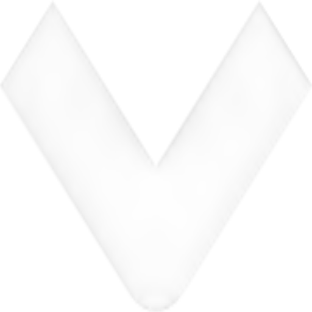
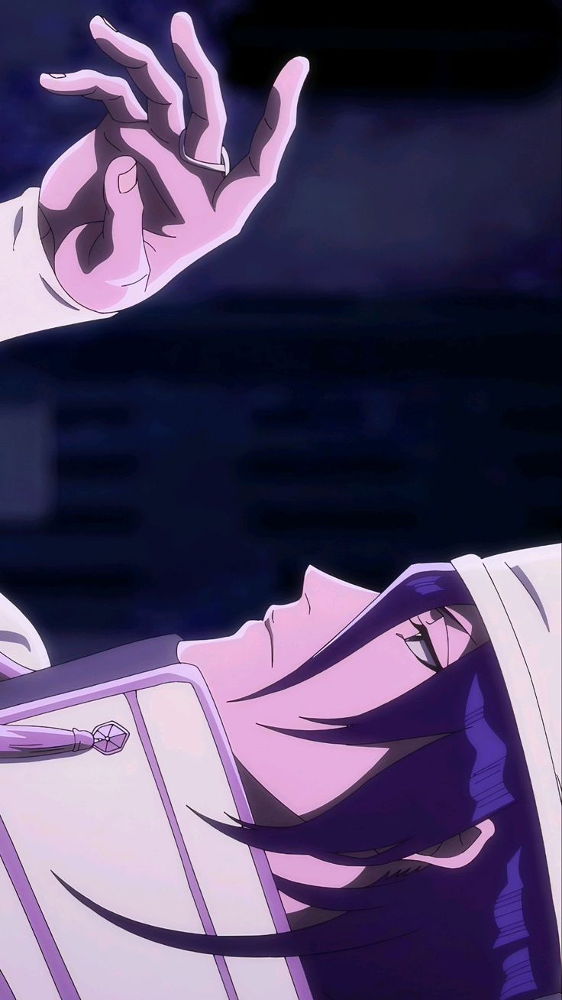

Ikuzo!


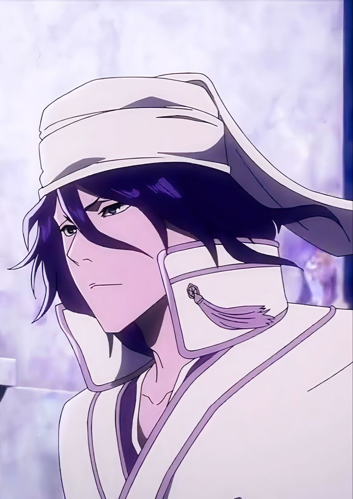
Byakuya Kuchiki is a fictional character from the anime and manga series "Bleach" created by Tite Kubo. He is a highly respected and powerful character in the series, often portrayed as a stoic and disciplined individual who values honor and duty above all else.
| Name | Byakuya Kuchiki |
|---|---|
| Species | Human |
| Birthday | January 31st |
| Height | 180 cm |
| Weight | 64 kg |
| Affiliation | Gotei 13 |
|---|---|
| Soul Society | |
| Kuchiki Clan | |
| Profession | Shinigami |
| Position | Captain of Squad 6 |
| 28th Head of the Kuchiki Clan |
Professional Status
"Let me tell you about the difference between you and me. It's like the story of the monkey trying to capture the moon. However close he thinks he is to the moon, it's still just the reflection of the moon in the middle of the lake. No matter how he struggles to capture that "moon", he inevitably sinks to the bottom of that lake to no avail. You will never reach me."
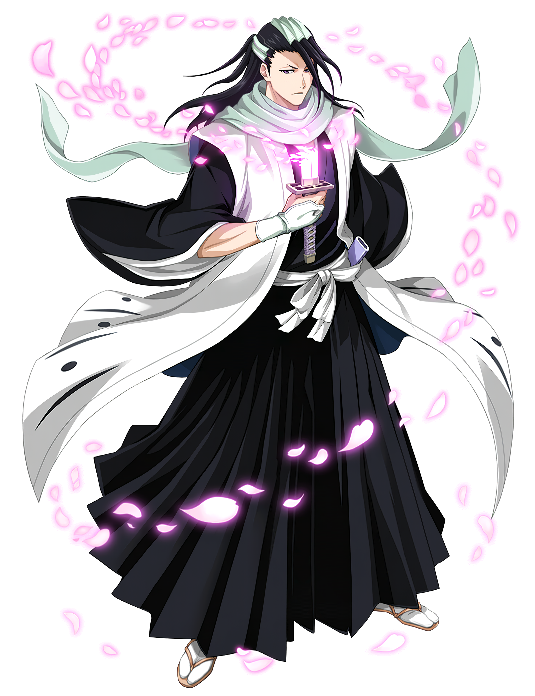
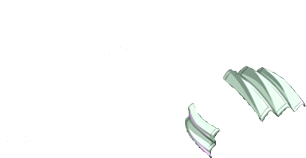
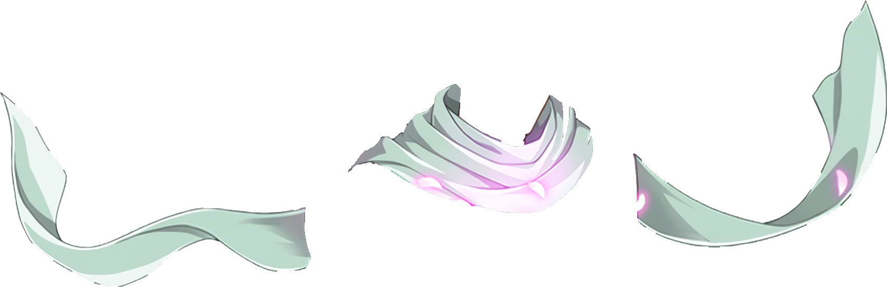
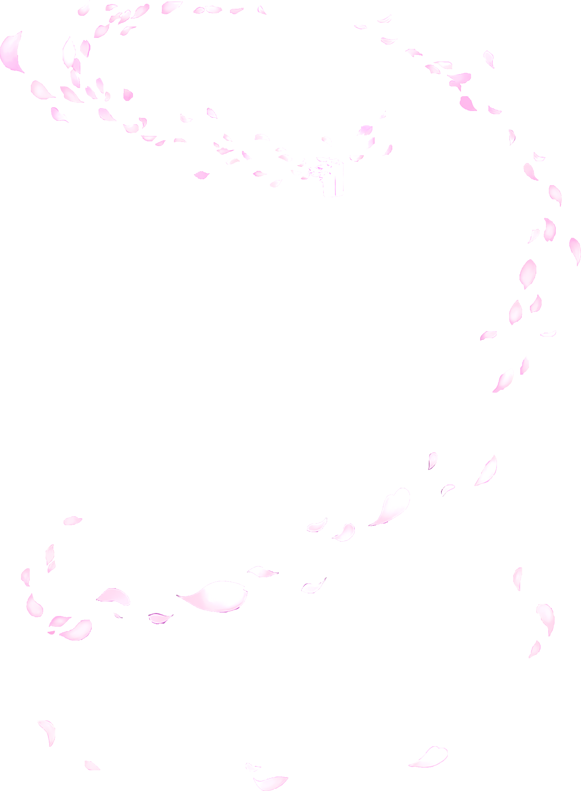
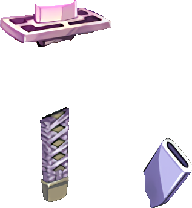
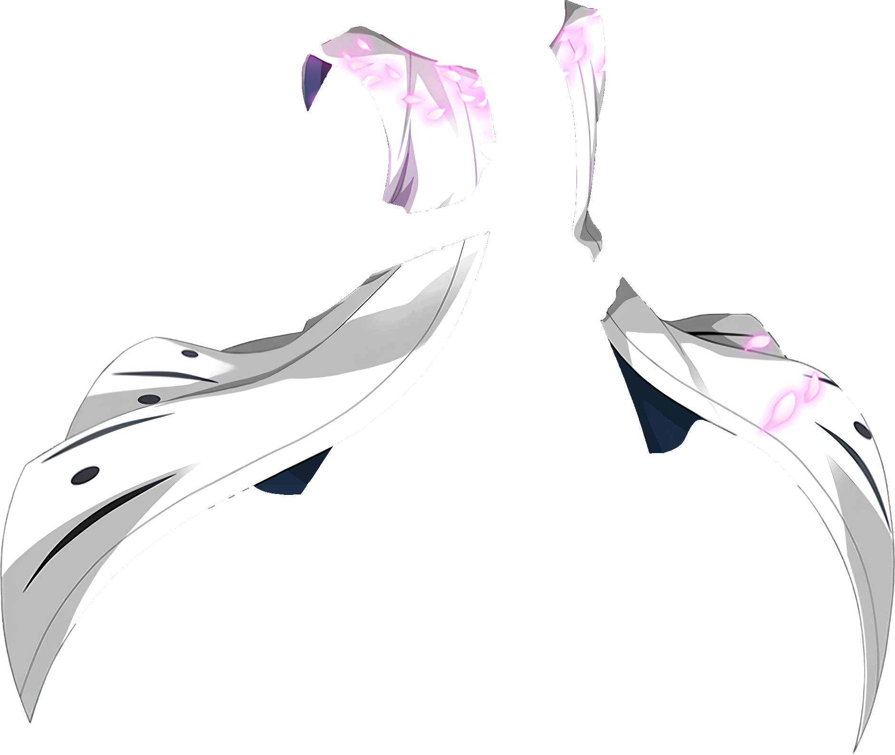
Byakuyas Head piece. He wears three on top of his head and two additionally on the side of his head. They symbolize nobility and his status as head of the Kuchiki clan.
Byakuyas scarf was tailored by the master weaver Tsujishirō Kuroemon III. It is made from Ginpaku Kazahana no Usuginu and embodies a family heirloom, that is passed down to the heads of the clan from generation to generation.
On top of his regular Shinigami Shihakusho, Byakua wears a short-sleeved Captain Haori. On its back is the Squad 6 emblem:

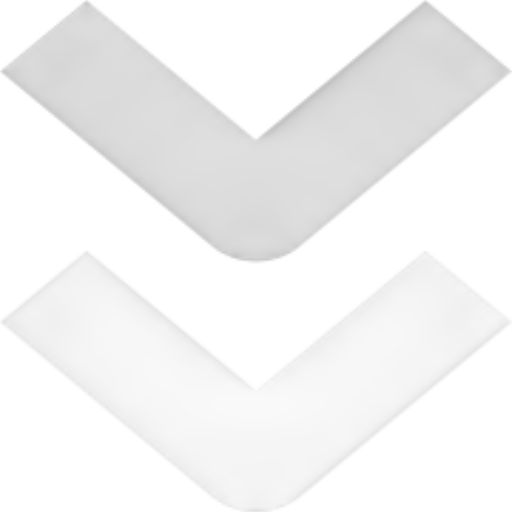
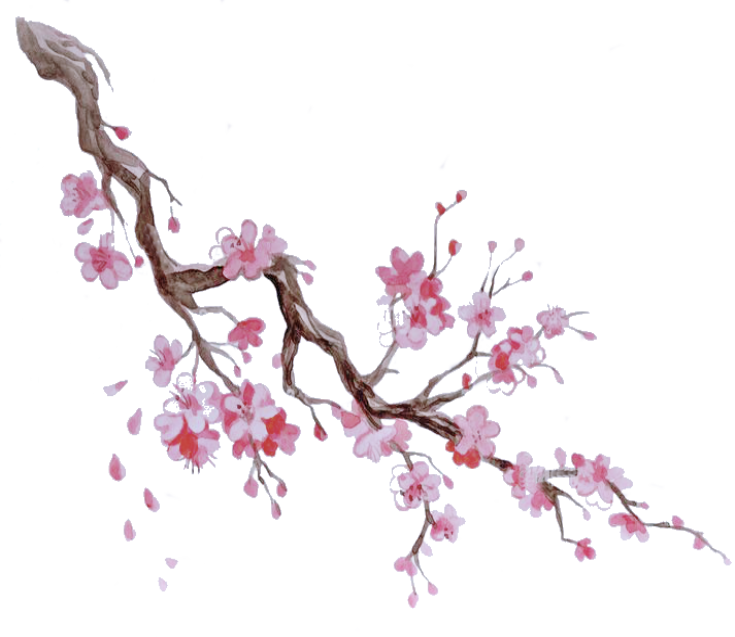
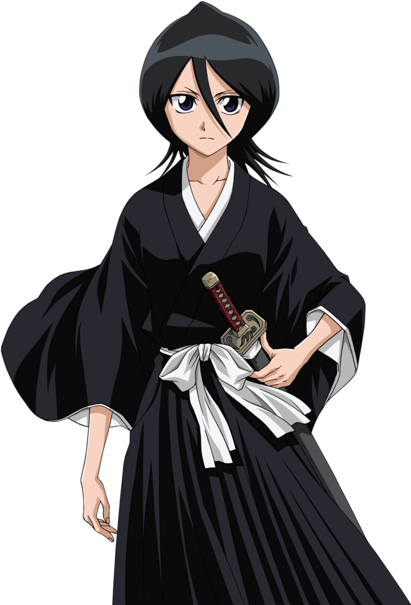
Rukia is byakuya kuchikis adoptive sister and hisana kuchikis biological sister. At the beginning of the series, she is intorduced as the vice captain of squad 13 under captain Jūshirō Ukitake. After his passing, she takes charge of the squad and becomes captain herself. She has a daughter, Ichika, with Renji Abarai, to whom she is married.
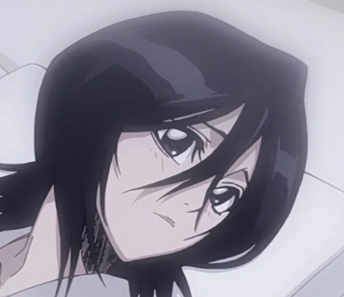
Hisana kuchiki is byakuyas wife. Due to an illness, she passed away approximately 50 years before the start of the series. Coming from a very poor sector, she had to leave her sister behind at a very young age to insure her own survival. She later asked Byakuya to look over Rukia and become a brother figure to her.
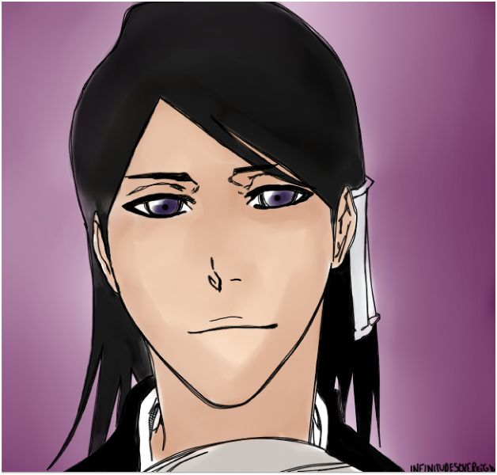
Sōjun is byakuyas biological father. He too, passed away before the start of the series. The cause of his death is unknown. Previously he served as the vice captain of squad 6.
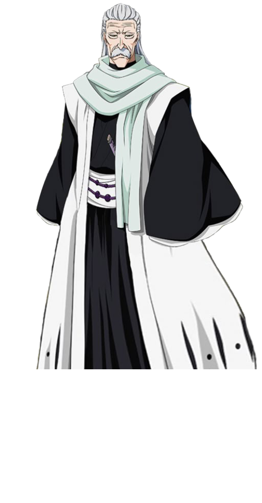
Ginrei is byakuyas biological grandfather. He also trained him when byakuya was still a child. About 100 years before the start of the series storyline he was in charge of the Kuchiki Clan and captain of squad 6.
Byakuya's zanpakuto is called Senbonzakura, which translates to "Thousand Cherry Blossoms".
Senbonzakuras personality is similar to his wielders. Most of the time he acts in a relaxed way and speaks in a calm yet cold manner. It seems he is a thoughtful person and never acts carelessly. He also seems to dislike people trying to get through to him. In reality Senbonzakura is very impatient and consequently tends to let others convince him to rash acts.
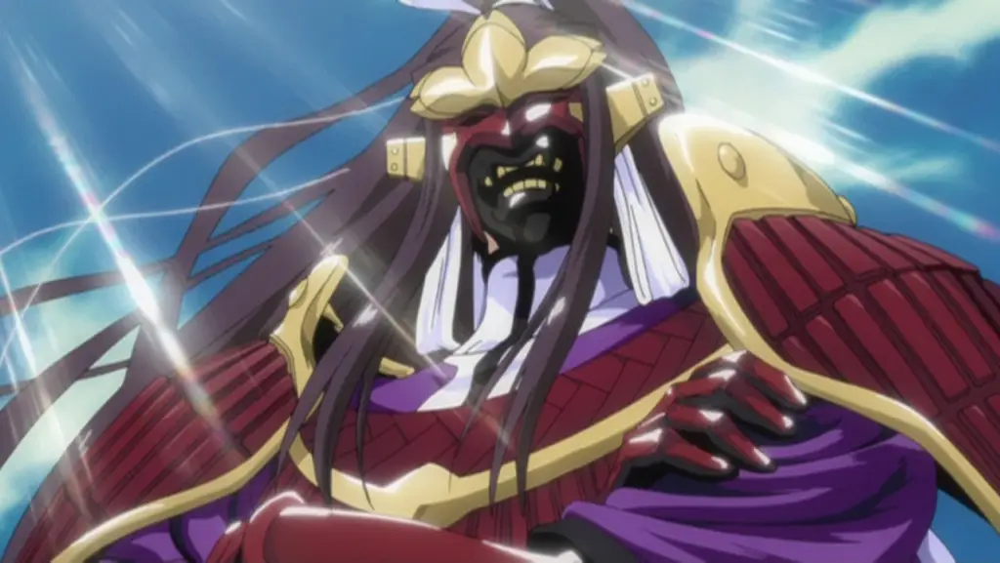
Upon command ,,scatter" Byakuyas Zanpakutōs blade disperses into a thousand small, pink pieces. All pieces move at a very high speed and are therefore not clearly recognizable. Due to light reflection , they appear to look like a bunch of Sakura petals. The Handle remains in Byakuyas hand and is used by him to control all pieces.
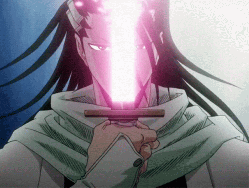
Byakuya lets his Zanpakutō fall to the ground, with the blade facing down. Upon impact it starts sinking in the ground and creates a wave pattern on it in the process. Within seconds, the surrounding area turns dark and two rows of giant swords apprear on each side beside Byakuya. Hereinafter the blades scatter into countles pieces, which, as in his Shikai, resmeble Sakura Petals.

"The curtain that falls down at the end, shall be pulled down by the blade of my sword."
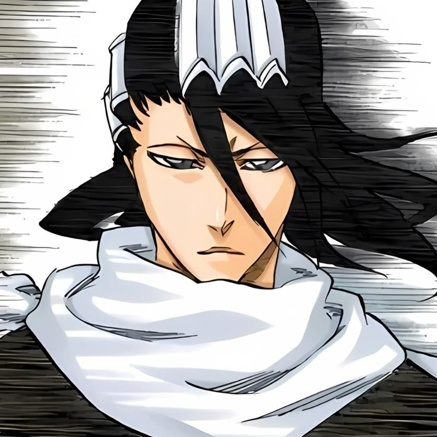
Byakuya is a Master of Shunpo. His increadible Speed is noticable in each of his fights throughout the Series.
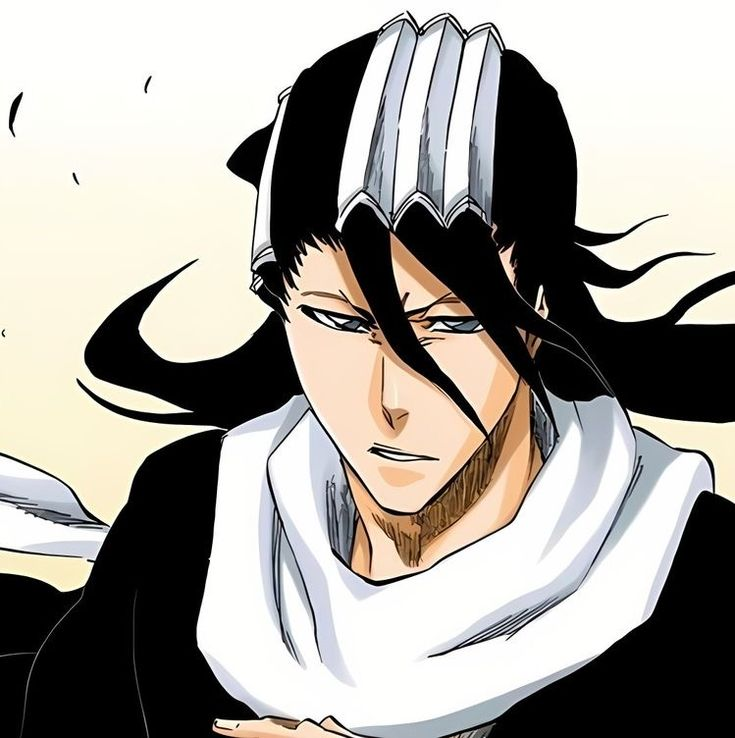
Byakuya is able to use various Spells, even without saying the required Kotodama-Verse out loud.
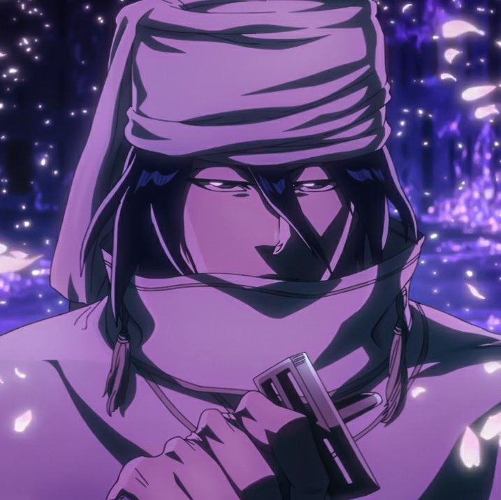
Byakuya is able to control his Bankai with ease and even his Shikai displays a great amount of destructive force.
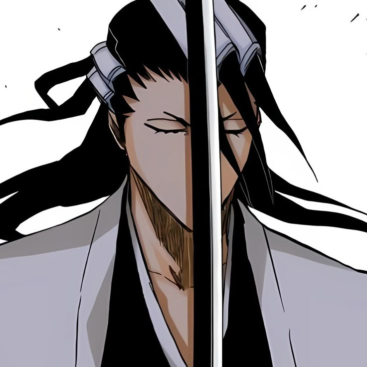
A special attack, that Byakuya usues in battle. He stabs his opponent twice, breaking their Soulchain and piercing their Heart.
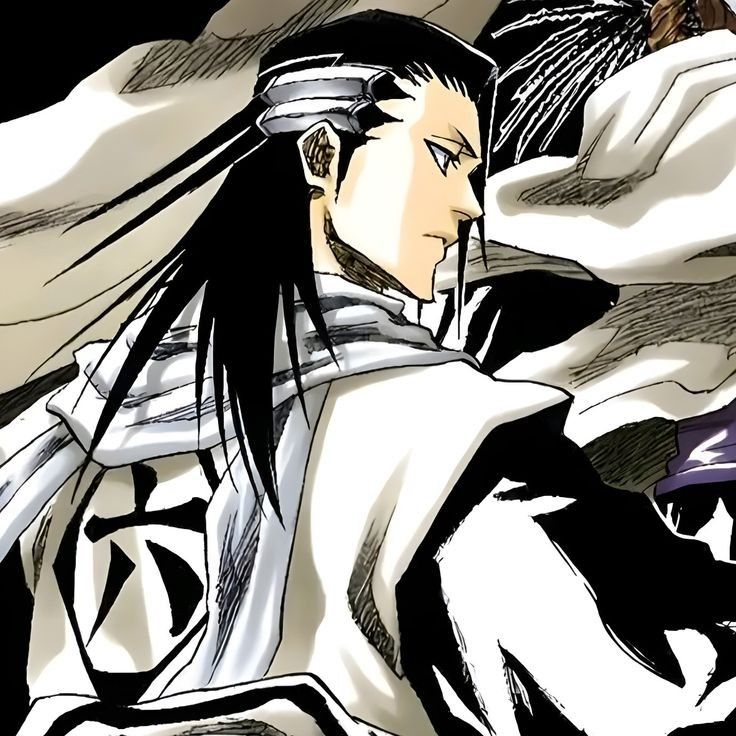
Byakuya holds an enormous amount of Spiritual Pressure, matching Kurosaki Ichigo and Kenpachi Zarakis.
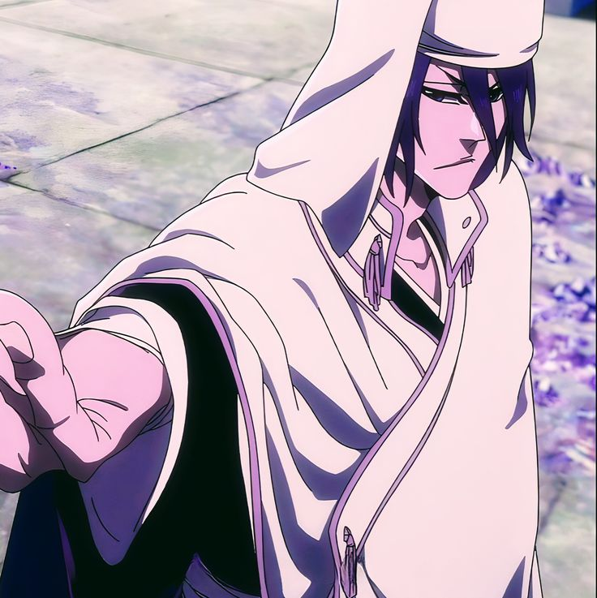
Byakuya is also skilled in hand-to-hand combat, although he prefers to fight with his Zanpakutō.
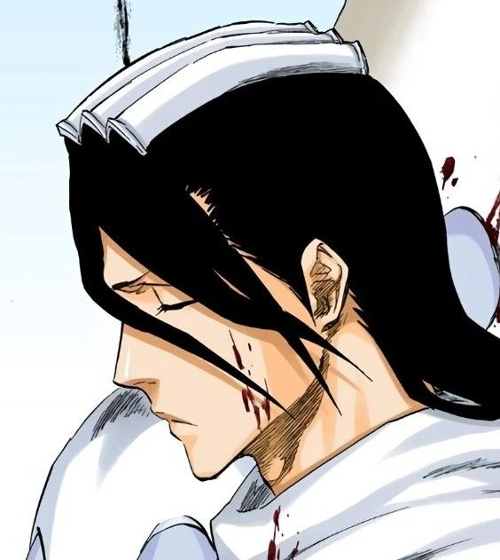
Byakuya is highly intelligent and strategic in battle. This allows him quickly to analyze his opponents strengts and weaknesses.